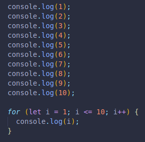
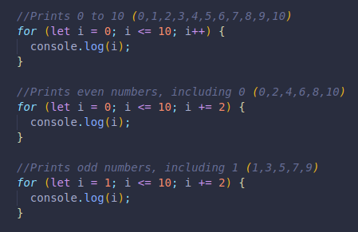
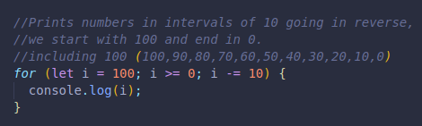
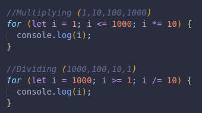
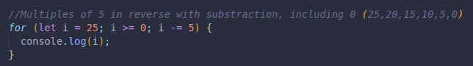

They help us repeat things, functionalities, etc.
If we wanted to print something in the console 10 times, it would take us 10 lines of code.
Say we want to print numbers starting at 1 and ending at 10.
Here we do it without and with the for loop:
for(i = 1; i <= 10; i++)
We need the semicolons in between each part of the loop.
i =1
This tells us START HERE, it defines i with a number value, since we want to print numbers from 1 to 10, it is logical to start with 1.
This variable can be named any other way too, but it is common to use i since we never access the variable anyways, its only purpose is for this loop.
But that ccan be changed as needed.
i <= 10
This tells us that AS LONG AS i is less than or equal to 0, do what follows. Since we want to stop at 10, we set the condition to have a limit of 10. It will keep running until 11 comes, for which it will not print the number in the console at that point, since it would at that point be more than 10, not less or equal to 10.
It is a boolean expression, so as long as it is TRUE, it will loop again!
For example: if i = 8, it asks IS 8 LESS THAN OR EQUAL TO 10? TRUE! So it keeps going.
i++
This is the i that keeps count in this case, every time the code runs, it will add 1, so by the time the code has completed 3 times, it will be equal to 3, and so on.
It updates the value of i. i = 11 by the time the number has been logged in the console 10 times, so it will once again check if i is less than or equal to 10.
Since 11 <= 10 is FALSE, it will stop there.
We can have specific numbers printed depending on the variable that keeps the count, and our starting variable value.
We can have the expression count down too, in intervals as desired like in the next example:
Even multiply and divide!
Another reversed example.
